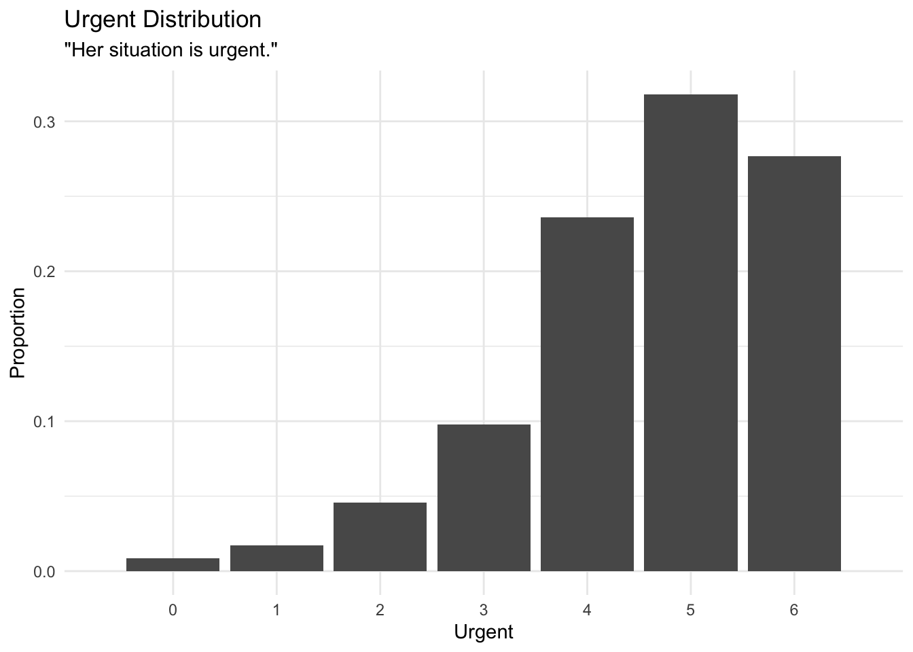

Chapter 4 Sympathy and Urgency
Summary statistics of sympathy and urgency
summary(trials$sympathy, digits = 2)## Min. 1st Qu. Median Mean 3rd Qu. Max.
## 0.0 4.0 5.0 4.8 6.0 6.0summary(trials$urgent, digits = 2)## Min. 1st Qu. Median Mean 3rd Qu. Max.
## 0.0 4.0 5.0 4.6 6.0 6.0Distribution of the followup questions
ggplot(trials) + itheme +
geom_bar(aes(urgent, group=1, y=..prop..)) +
scale_x_discrete(limits = seq(0,6)) +
labs(x = "Urgent", y = "Proportion", title = "Urgent Distribution", subtitle = "\"Her situation is urgent.\"")
ggplot(trials) + itheme +
geom_bar(aes(sympathy, group=1, y=..prop..)) +
scale_x_discrete(limits = seq(0,6)) +
labs(x = "Sympathy", y = "Proportion", title = "Sympathy Distribution", subtitle = "\"Her situation is one I sympathize with.\"")ggplot(trials) + itheme +
geom_bar(aes(as.factor(urgent), fill = cond_metaphor), width = 0.9, position = position_dodge2(preserve = "single")) +
labs(x = "Urgent", y = "Count", title = "Urgent Distribution", subtitle = "\"Her situation is urgent.\"") +
scale_fill_brewer(palette = "Pastel1")ggplot(trials) + itheme +
geom_bar(aes(as.factor(sympathy), fill = cond_metaphor), width = 0.9, position = position_dodge2(preserve = "single")) +
labs(x = "Sympathy", y = "Count", title = "Sympathy Distribution", subtitle = "\"Her situation is sympathy\"") +
scale_fill_brewer(palette = "Pastel1")4.1 Sympathy
Does the metaphorical condition have a relationship to participant’s rating of perceived sympathy?
H: Higher sympathy leads to higher donations
model_sympathy_base = lm(update(base.formula, donation ~ .), data = trials)
model_sympathy_full = lm(update(base.formula, donation ~ . + sympathy), data = trials)
compare_lm(model_sympathy_base, model_sympathy_full)## Analysis of Variance Table
##
## Model 1: donation ~ cond_sex + self_cancer + ff_cancer + gender + education +
## socioeconomic + past_donations.z + age.z
## Model 2: donation ~ cond_sex + self_cancer + ff_cancer + gender + education +
## socioeconomic + past_donations.z + age.z + sympathy
## Res.Df RSS Df Sum of Sq Pr(>Chi)
## 1 4477 1145461
## 2 4476 1064382 1 81079 < 2.2e-16 ***
## ---
## Signif. codes: 0 '***' 0.001 '**' 0.01 '*' 0.05 '.' 0.1 ' ' 1
## Chisq Stat: 330.504
## NULL
## MODEL INFO:
## Observations: 4502
## Dependent Variable: donation
## Type: OLS linear regression
##
## MODEL FIT:
## F(25,4476) = 19.077, p = 0.000
## R² = 0.096
## Adj. R² = 0.091
##
## Standard errors: OLS
## ------------------------------------------------------------------------
## Est. 2.5% 97.5% t val. p
## --------------------------- -------- --------- -------- -------- -------
## (Intercept) 8.658 2.287 15.028 2.664 0.008
## cond_sexfemale -0.330 -1.235 0.575 -0.715 0.474
## self_cancerY 4.343 2.122 6.565 3.833 0.000
## self_cancerOO 6.053 1.252 10.854 2.472 0.013
## ff_cancerY 0.917 -0.067 1.902 1.827 0.068
## ff_cancerOO 4.137 0.630 7.644 2.313 0.021
## genderF 0.537 -0.389 1.463 1.137 0.256
## genderNB 2.040 -4.066 8.146 0.655 0.513
## genderOO -3.339 -12.682 6.004 -0.701 0.484
## educationHS -3.912 -10.056 2.232 -1.248 0.212
## educationA -3.608 -9.836 2.620 -1.136 0.256
## educationB -2.359 -8.489 3.771 -0.754 0.451
## educationM -0.776 -7.001 5.450 -0.244 0.807
## educationP -2.294 -8.998 4.410 -0.671 0.502
## educationD -3.027 -9.959 3.904 -0.856 0.392
## educationOO -4.088 -13.710 5.534 -0.833 0.405
## socioeconomic10-25k -0.319 -2.039 1.401 -0.363 0.716
## socioeconomic25-50k 0.144 -1.418 1.707 0.181 0.856
## socioeconomic50-75k 0.805 -0.857 2.466 0.950 0.342
## socioeconomic75-100k 1.902 -0.004 3.808 1.956 0.050
## socioeconomic100-150k 1.296 -0.896 3.487 1.159 0.246
## socioeconomic>150k 2.198 -0.862 5.257 1.408 0.159
## socioeconomicOO -2.132 -5.256 0.992 -1.338 0.181
## past_donations.z 2.295 1.375 3.215 4.892 0.000
## age.z -1.302 -2.258 -0.345 -2.667 0.008
## sympathy 3.339 2.984 3.693 18.465 0.000
## ------------------------------------------------------------------------4.2 Urgency
# b = trials %>%
# ggplot(aes(factor(urgent+1), donation)) + ptheme +
# # geom_boxplot()
# stat_summary(geom = "errorbar", fun.data = mean_se, width = 0.2) +
# stat_summary(geom = "point", fun.data = mean_se, shape = 5) +
# geom_jitter(alpha = 0.02, width = 0.25, shape = 16) +
# scale_x_discrete(labels = c("1" = "1\nNot urgent", "7" = "7")) +
# scale_y_continuous(labels = scales::dollar) +
# labs(y = "Donation", x = "Urgency", title = "Urgency on Donation") +
# coord_cartesian(ylim = c(5, 36))
#
# bDoes the metaphorical condition have a relationship to participant’s rating of perceived urgency?
H: High urgency leads to higher donations
model_urgent_base = lm(update(base.formula, donation ~ .), data = trials)
model_urgent_full = lm(update(base.formula, donation ~ . + urgent), data = trials)
compare_lm(model_urgent_base, model_urgent_full)## Analysis of Variance Table
##
## Model 1: donation ~ cond_sex + self_cancer + ff_cancer + gender + education +
## socioeconomic + past_donations.z + age.z
## Model 2: donation ~ cond_sex + self_cancer + ff_cancer + gender + education +
## socioeconomic + past_donations.z + age.z + urgent
## Res.Df RSS Df Sum of Sq Pr(>Chi)
## 1 4477 1145461
## 2 4476 1064422 1 81039 < 2.2e-16 ***
## ---
## Signif. codes: 0 '***' 0.001 '**' 0.01 '*' 0.05 '.' 0.1 ' ' 1
## Chisq Stat: 330.336
## NULL
## MODEL INFO:
## Observations: 4502
## Dependent Variable: donation
## Type: OLS linear regression
##
## MODEL FIT:
## F(25,4476) = 19.069, p = 0.000
## R² = 0.096
## Adj. R² = 0.091
##
## Standard errors: OLS
## ------------------------------------------------------------------------
## Est. 2.5% 97.5% t val. p
## --------------------------- -------- --------- -------- -------- -------
## (Intercept) 8.916 2.552 15.280 2.747 0.006
## cond_sexfemale -0.344 -1.249 0.561 -0.746 0.456
## self_cancerY 4.458 2.237 6.680 3.934 0.000
## self_cancerOO 5.595 0.795 10.395 2.285 0.022
## ff_cancerY 1.684 0.705 2.664 3.371 0.001
## ff_cancerOO 4.677 1.169 8.184 2.614 0.009
## genderF 1.076 0.151 2.001 2.280 0.023
## genderNB 2.518 -3.588 8.624 0.809 0.419
## genderOO -2.315 -11.658 7.029 -0.486 0.627
## educationHS -4.426 -10.570 1.719 -1.412 0.158
## educationA -3.954 -10.182 2.274 -1.245 0.213
## educationB -2.560 -8.690 3.571 -0.819 0.413
## educationM -0.619 -6.845 5.607 -0.195 0.845
## educationP -1.642 -8.346 5.063 -0.480 0.631
## educationD -2.982 -9.914 3.950 -0.843 0.399
## educationOO -4.808 -14.431 4.815 -0.980 0.327
## socioeconomic10-25k -0.640 -2.359 1.080 -0.729 0.466
## socioeconomic25-50k 0.005 -1.557 1.568 0.006 0.995
## socioeconomic50-75k 0.662 -1.000 2.323 0.781 0.435
## socioeconomic75-100k 2.077 0.170 3.983 2.136 0.033
## socioeconomic100-150k 1.260 -0.932 3.451 1.127 0.260
## socioeconomic>150k 2.138 -0.921 5.198 1.370 0.171
## socioeconomicOO -1.651 -4.776 1.474 -1.036 0.300
## past_donations.z 2.529 1.610 3.448 5.394 0.000
## age.z -0.835 -1.789 0.118 -1.717 0.086
## urgent 3.330 2.976 3.683 18.460 0.000
## ------------------------------------------------------------------------4.3 Metaphor on Sympathy
# a = trials %>%
# # mutate(cond_metaphor = factor(cond_metaphor, levels = c("literal", "journey", "battle"))) %>%
# ggplot(aes(cond_metaphor, urgent+1)) + ptheme +
# stat_summary(geom = "errorbar", fun.data = mean_se, width = 0.1, position = position_dodge(width = 0.3)) +
# stat_summary(geom = "point", fun.data = mean_se, shape = 5, position = position_dodge(width = 0.3)) +
# scale_x_discrete(labels = c("literal" = "Literal", "battle" = "Battle", "journey" = "Journey")) +
# labs(title = "Metaphor Condition on Urgency", x = "Metaphor", y = "Urgency (1 - 7)") +
# # scale_color_brewer(palette = "Set1", name = "Gender") +
# coord_cartesian(ylim = c(5.35, 6.2)) +
# geom_signif(comparisons = list(c("journey", "battle"), c("literal", "battle")),
# y_position = c(5.8, 5.95),
# tip_length = 0.005,
# textsize = 2.75,
# annotations = c("list({\U03C7^2}(1) == 10.4, ~~ p < 0.01)",
# "list({\U03C7^2}(1) == 7.8, ~~ p < 0.01)"),
# parse = T)
#
# g = grid.arrange(a, b, nrow = 1)
# ggsave("urgency.png", g, width = pwidth, height = pheight, bg = "transparent")The metaphor condition predicts how much sympathy participants feel
model_sympathy_base = lm(update(base.formula, sympathy ~ .), data = trials)
model_sympathy_full = lm(update(base.formula, sympathy ~ . + cond_metaphor), data = trials)
compare_lm(model_sympathy_base, model_sympathy_full)## Analysis of Variance Table
##
## Model 1: sympathy ~ cond_sex + self_cancer + ff_cancer + gender + education +
## socioeconomic + past_donations.z + age.z
## Model 2: sympathy ~ cond_sex + self_cancer + ff_cancer + gender + education +
## socioeconomic + past_donations.z + age.z + cond_metaphor
## Res.Df RSS Df Sum of Sq Pr(>Chi)
## 1 4477 7274.2
## 2 4475 7274.0 2 0.2518 0.9255
## Chisq Stat: 0.156
## NULL4.4 Metaphor on Urgency
The metaphor condition predicts how much urgency participants feel
model_urgent_base = lm(update(base.formula, urgent ~ .), data = filter(trials, cond_metaphor != "literal"))
model_urgent_full = lm(update(base.formula, urgent ~ . + cond_metaphor), data = filter(trials, cond_metaphor != "literal"))
compare_lm(model_urgent_base, model_urgent_full)## Analysis of Variance Table
##
## Model 1: urgent ~ cond_sex + self_cancer + ff_cancer + gender + education +
## socioeconomic + past_donations.z + age.z
## Model 2: urgent ~ cond_sex + self_cancer + ff_cancer + gender + education +
## socioeconomic + past_donations.z + age.z + cond_metaphor
## Res.Df RSS Df Sum of Sq Pr(>Chi)
## 1 2946 4838.1
## 2 2945 4821.4 1 16.733 0.001388 **
## ---
## Signif. codes: 0 '***' 0.001 '**' 0.01 '*' 0.05 '.' 0.1 ' ' 1
## Chisq Stat: 10.293
## NULL
## MODEL INFO:
## Observations: 2971
## Dependent Variable: urgent
## Type: OLS linear regression
##
## MODEL FIT:
## F(25,2945) = 2.099, p = 0.001
## R² = 0.018
## Adj. R² = 0.009
##
## Standard errors: OLS
## -----------------------------------------------------------------------
## Est. 2.5% 97.5% t val. p
## --------------------------- -------- -------- -------- -------- -------
## (Intercept) 4.683 4.061 5.304 14.770 0.000
## cond_sexfemale -0.025 -0.118 0.067 -0.537 0.592
## self_cancerY -0.016 -0.236 0.205 -0.139 0.890
## self_cancerOO -0.221 -0.718 0.275 -0.874 0.382
## ff_cancerY 0.075 -0.026 0.176 1.453 0.146
## ff_cancerOO -0.085 -0.425 0.255 -0.489 0.625
## genderF -0.016 -0.110 0.079 -0.326 0.745
## genderNB 0.012 -0.643 0.666 0.034 0.973
## genderOO 0.260 -0.654 1.174 0.558 0.577
## educationHS 0.044 -0.575 0.662 0.139 0.890
## educationA -0.050 -0.678 0.577 -0.157 0.875
## educationB -0.082 -0.699 0.535 -0.261 0.794
## educationM -0.136 -0.763 0.491 -0.426 0.670
## educationP -0.272 -0.954 0.409 -0.784 0.433
## educationD -0.110 -0.809 0.590 -0.307 0.759
## educationOO -0.103 -1.024 0.818 -0.219 0.827
## socioeconomic10-25k -0.000 -0.175 0.174 -0.003 0.998
## socioeconomic25-50k 0.141 -0.019 0.301 1.723 0.085
## socioeconomic50-75k 0.129 -0.041 0.300 1.487 0.137
## socioeconomic75-100k -0.018 -0.213 0.176 -0.186 0.852
## socioeconomic100-150k -0.141 -0.366 0.084 -1.227 0.220
## socioeconomic>150k -0.077 -0.383 0.228 -0.495 0.620
## socioeconomicOO -0.145 -0.454 0.164 -0.921 0.357
## past_donations.z 0.035 -0.056 0.125 0.750 0.453
## age.z 0.158 0.059 0.257 3.143 0.002
## cond_metaphorjourney -0.151 -0.243 -0.058 -3.197 0.001
## -----------------------------------------------------------------------4.5 Cancer Experience on Sympathy
model_selfcancer_sympathy_base = lm(update(base.formula, sympathy ~ . - self_cancer), data = trials)
model_selfcancer_sympathy_full = lm(update(base.formula, sympathy ~ .), data = trials)
compare_lm(model_selfcancer_sympathy_base, model_selfcancer_sympathy_full)## Analysis of Variance Table
##
## Model 1: sympathy ~ cond_sex + ff_cancer + gender + education + socioeconomic +
## past_donations.z + age.z
## Model 2: sympathy ~ cond_sex + self_cancer + ff_cancer + gender + education +
## socioeconomic + past_donations.z + age.z
## Res.Df RSS Df Sum of Sq Pr(>Chi)
## 1 4479 7276.2
## 2 4477 7274.2 2 1.9125 0.5551
## Chisq Stat: 1.183
## NULLmodel_ffcancer_sympathy_base = lm(update(base.formula, sympathy ~ . - ff_cancer), data = trials)
model_ffcancer_sympathy_full = lm(update(base.formula, sympathy ~ .), data = trials)
compare_lm(model_ffcancer_sympathy_base, model_ffcancer_sympathy_full)## Analysis of Variance Table
##
## Model 1: sympathy ~ cond_sex + self_cancer + gender + education + socioeconomic +
## past_donations.z + age.z
## Model 2: sympathy ~ cond_sex + self_cancer + ff_cancer + gender + education +
## socioeconomic + past_donations.z + age.z
## Res.Df RSS Df Sum of Sq Pr(>Chi)
## 1 4479 7349.8
## 2 4477 7274.2 2 75.6 7.879e-11 ***
## ---
## Signif. codes: 0 '***' 0.001 '**' 0.01 '*' 0.05 '.' 0.1 ' ' 1
## Chisq Stat: 46.547
## NULL
## MODEL INFO:
## Observations: 4502
## Dependent Variable: sympathy
## Type: OLS linear regression
##
## MODEL FIT:
## F(24,4477) = 6.780, p = 0.000
## R² = 0.035
## Adj. R² = 0.030
##
## Standard errors: OLS
## -----------------------------------------------------------------------
## Est. 2.5% 97.5% t val. p
## --------------------------- -------- -------- -------- -------- -------
## (Intercept) 4.571 4.062 5.080 17.595 0.000
## cond_sexfemale -0.059 -0.134 0.016 -1.544 0.123
## self_cancerY -0.004 -0.188 0.180 -0.043 0.966
## self_cancerOO -0.220 -0.616 0.177 -1.085 0.278
## ff_cancerY 0.277 0.197 0.358 6.720 0.000
## ff_cancerOO 0.006 -0.284 0.296 0.040 0.968
## genderF 0.125 0.049 0.202 3.216 0.001
## genderNB 0.045 -0.460 0.550 0.174 0.862
## genderOO 0.077 -0.695 0.849 0.195 0.845
## educationHS 0.109 -0.399 0.617 0.422 0.673
## educationA 0.020 -0.494 0.535 0.078 0.938
## educationB 0.016 -0.491 0.523 0.062 0.951
## educationM 0.085 -0.430 0.599 0.322 0.747
## educationP 0.093 -0.461 0.647 0.330 0.742
## educationD -0.099 -0.672 0.474 -0.340 0.734
## educationOO -0.015 -0.810 0.780 -0.037 0.970
## socioeconomic10-25k -0.151 -0.293 -0.009 -2.086 0.037
## socioeconomic25-50k 0.017 -0.112 0.146 0.262 0.793
## socioeconomic50-75k 0.045 -0.092 0.183 0.646 0.518
## socioeconomic75-100k 0.022 -0.135 0.180 0.277 0.782
## socioeconomic100-150k -0.126 -0.307 0.055 -1.363 0.173
## socioeconomic>150k -0.212 -0.465 0.041 -1.645 0.100
## socioeconomicOO -0.072 -0.330 0.186 -0.548 0.583
## past_donations.z 0.098 0.022 0.174 2.529 0.011
## age.z 0.250 0.171 0.328 6.213 0.000
## -----------------------------------------------------------------------4.6 Cancer Experience on Urgency
model_selfcancer_urgent_base = lm(update(base.formula, urgent ~ . - self_cancer), data = trials)
model_selfcancer_urgent_full = lm(update(base.formula, urgent ~ .), data = trials)
compare_lm(model_selfcancer_urgent_base, model_selfcancer_urgent_full)## Analysis of Variance Table
##
## Model 1: urgent ~ cond_sex + ff_cancer + gender + education + socioeconomic +
## past_donations.z + age.z
## Model 2: urgent ~ cond_sex + self_cancer + ff_cancer + gender + education +
## socioeconomic + past_donations.z + age.z
## Res.Df RSS Df Sum of Sq Pr(>Chi)
## 1 4479 7309.7
## 2 4477 7309.2 2 0.53564 0.8487
## Chisq Stat: 0.33
## NULLmodel_ffcancer_urgent_base = lm(update(base.formula, urgent ~ . - ff_cancer), data = trials)
model_ffcancer_urgent_full = lm(update(base.formula, urgent ~ .), data = trials)
compare_lm(model_ffcancer_urgent_base, model_ffcancer_urgent_full)## Analysis of Variance Table
##
## Model 1: urgent ~ cond_sex + self_cancer + gender + education + socioeconomic +
## past_donations.z + age.z
## Model 2: urgent ~ cond_sex + self_cancer + ff_cancer + gender + education +
## socioeconomic + past_donations.z + age.z
## Res.Df RSS Df Sum of Sq Pr(>Chi)
## 1 4479 7314.1
## 2 4477 7309.2 2 4.8578 0.2259
## Chisq Stat: 2.991
## NULL